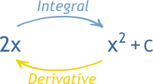

Integration is the 'opposite' of differentiation - and so if you can differentiate, you can be pretty confident you'll be able to integrate too. There's just one extra thing you have to remember - the constant of integration...
The Fundamental Theorem of Calculus
When you differentiate, you get dy/dx,
And when you integrate dy/dx, you get y
plus a constant of integration.
Click on the image to learn more!
You need the constant because there's More Than One right answer
When you integrate something, you're trying to find a function that
differentiates to give what you
started with. You add the constant of integration to allow for the fact that there's more
than one
possible function that does this...
∫2x=
x2 - 207.253
x2 - 1
x2
x2 + ℼ
So the answer to this integral is actually...
∫2x dx = x2 + C
The 'C' just means'any number'. This is the constant of integration.
You only need to add a constant of integration of indefinite integrals like these ones.
Definite integrals are just integrals with limits (or little numbers) next to the integral sign.